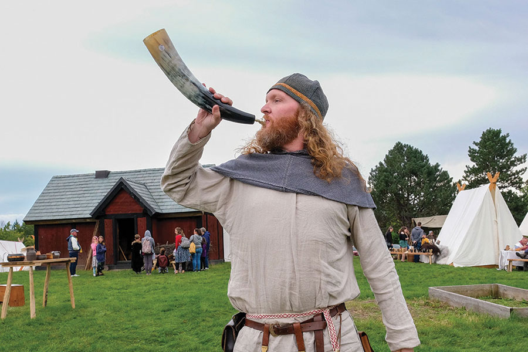

Welcome!
Welcome to our website. This is the front page for Safe Travels Viking Festival, a group of passionate artists, cosplayers, & event organizers who are always welcome to invite in newcomers and spread the word of viking-themes renaissance faires!

Future Festivals
December, 21st, 2023
Lady of the Lakes Renaissance Faire
Times: Noon-5pm. Lady of the Lakes Ren Faire is one of the most popular spots in all of Central Florida!
December, 29th, 2023
Bay Area Renaissance Festival
Times: Noon-8pm. This location has a good variety of shops, drink, and food.
January, 21st, 2023
Brevard Renaissance Fair
Times: Noon-5pm. The best Eastern Coast spot in Central Florida.
January, 29th, 2023
Sarasota Medieval Fair
Times: Noon-8pm. One of the best Western Coast locations in South Florida.